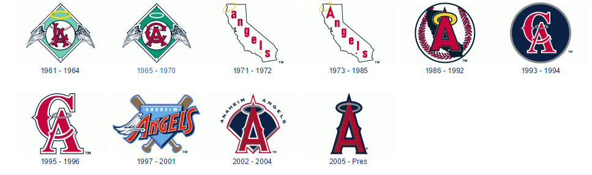

They have had 10 different logos over 54 years of the franchise!

The angels have a 230 foot high "A" - complete with a halo - that serves as the main scoreboard support!
The world record for the largest gathering of people in sombreros was set at Angel Stadium during an Angels Game!